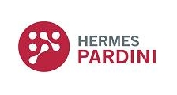

<ion-header>
  <ion-toolbar color="primary">
    <ion-title class="ion-padding ion-text-center">Histórico de Exames</ion-title>
    <ion-searchbar showCancelButton="always"></ion-searchbar>
  </ion-toolbar>

    <ion-item>
      <ion-label>Filtrar por...</ion-label>
      <ion-select >
        <ion-select-option class="ion-text-nowrap" value="">Classificação dos Clientes</ion-select-option>
        <ion-select-option value="">Data</ion-select-option>
        <ion-select-option value="">Preço baixo</ion-select-option>
      </ion-select>
    </ion-item>

</ion-header>

<ion-content>
  <ion-grid>
    <ion-row>
      <ion-col size="12" size-sm>
        <ion-item>
          <ion-thumbnail slot="start">
            
          </ion-thumbnail>
          <ion-label>
            <h2>Checkout Outubro Rosa</h2>
            <p>Laboratorio Hermes Pardini</p>
            <div class="endereço">
              <span class="">R. Conceição do Mato, 115, centro</span><br>
              <span class="">Agostinho - Belo Horizonte - MG, 32370360</span>
              <span class=""></span>
            </div>
          </ion-label>
        
        </ion-item>
      </ion-col>
    </ion-row>
  </ion-grid>

</ion-content>
